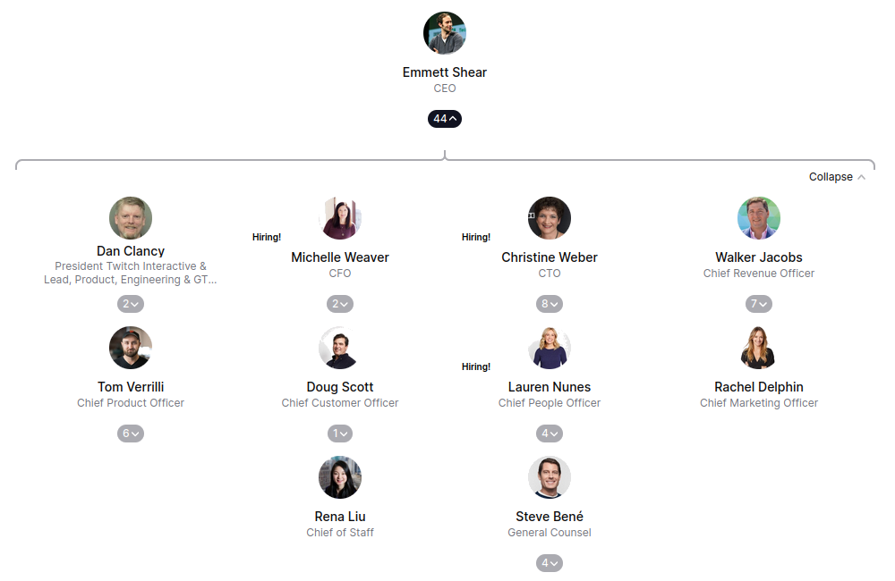

Let's talk business!
- Private corporation
- Amazon subsidiary
The internal structure

Activities
What does the company do?
Founding history
Growth and early events
Post amazon acquisition
sources:
all pages last visited on 26.03.23
no particular author
- https://www.twitch.tv/p/en/company/
- https://twitchtracker.com/statistics/viewers
- https://www.businessinsider.com/amazon-buys-twitch-2014-8
- https://www.linkedin.com/company/twitch-tv/
- https://theorg.com/org/twitch
- https://thenextweb.com/news/twitchtv-justin-tvs-killer-new-esports-project
- https://www.forbes.com/sites/davidewalt/2013/11/13/the-espn-of-video-games/
- twitch.tv
- https://www.owler.com/company/twitch